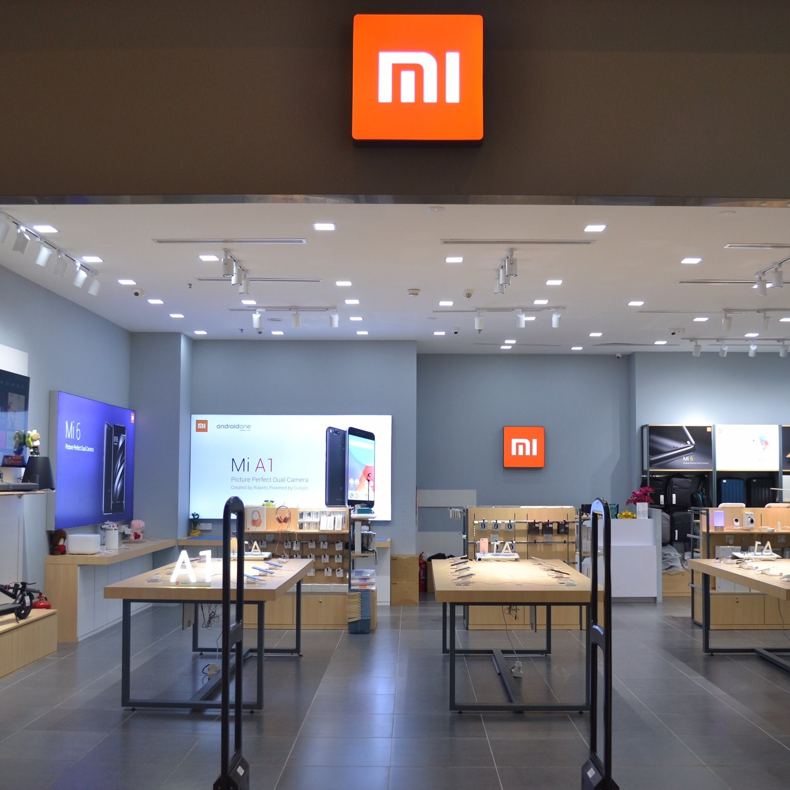

Компания сейчас
Линейку устройств и аксессуаров Xiaomi невозможно посчитать по пальцам. Может показаться, что компания выпустила всевозможные гаджеты: наушники, весы, увлажнители воздуха, чайники, сумки, рюкзаки и чемоданы, камеры наблюдения, огромную линейку устройств «умного» дома с датчиками движения, температуры и прочим, и так можно перечислять до бесконечности. Также у Xiaomi есть множество дочерних компаний, которые выпускают «умные» колонки и различные электрические отвертки.
С 2011 года она выпустила почти 50 смартфонов, три планшета и несколько ноутбуков. И точно не собирается останавливаться. По результатам третьего квартала 2017 года компания вернулась в пятерку лидеров среди мировых производителей с долей рынка 7,4% — прирост год к году 102%. Очень хороший результат.
Компания эффективно работает не только в Китае, но и уверенно чувствует себя на немаленьком рынке Индии.
Многие не знают, что у Xiaomi есть своя краудфандинговая площадка Youpin.mi.com — аналог зарубежного Kickstarter. Там любая маленькая компания может открыть сбор средств на новое устройство или аксессуар. Можно найти множество интересных вещей, типа электронной сигареты с витаминами или «умного» дверного замка со сканером отпечатков пальцев. Но сайт работает только на китайском языке.
В январе 2017 года Хьюго Барра покинул компанию Xiaomi, в которой проработал больше трех лет, и устроился в Facebook руководителем команды виртуальной реальности Oculus.
В России Xiaomi чувствует себя неплохо, несмотря на скандал с таможней. В июле 2017 года она заняла пятое место с долей рынка 4,4%. В середине ноября открылся первый круглосуточный магазин Xiaomi в Москве, и объявили старт продаж безрамочного флагмана Mi MIX 2, экшн-камеры, новых весов и «умной» лампы.
С 2011 года она выпустила почти 50 смартфонов, три планшета и несколько ноутбуков. И точно не собирается останавливаться. По результатам третьего квартала 2017 года компания вернулась в пятерку лидеров среди мировых производителей с долей рынка 7,4% — прирост год к году 102%. Очень хороший результат.
Компания эффективно работает не только в Китае, но и уверенно чувствует себя на немаленьком рынке Индии.
Многие не знают, что у Xiaomi есть своя краудфандинговая площадка Youpin.mi.com — аналог зарубежного Kickstarter. Там любая маленькая компания может открыть сбор средств на новое устройство или аксессуар. Можно найти множество интересных вещей, типа электронной сигареты с витаминами или «умного» дверного замка со сканером отпечатков пальцев. Но сайт работает только на китайском языке.
В январе 2017 года Хьюго Барра покинул компанию Xiaomi, в которой проработал больше трех лет, и устроился в Facebook руководителем команды виртуальной реальности Oculus.
В России Xiaomi чувствует себя неплохо, несмотря на скандал с таможней. В июле 2017 года она заняла пятое место с долей рынка 4,4%. В середине ноября открылся первый круглосуточный магазин Xiaomi в Москве, и объявили старт продаж безрамочного флагмана Mi MIX 2, экшн-камеры, новых весов и «умной» лампы.